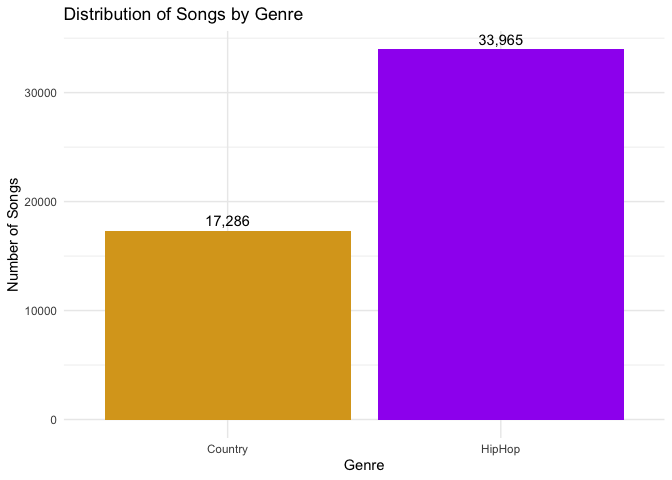
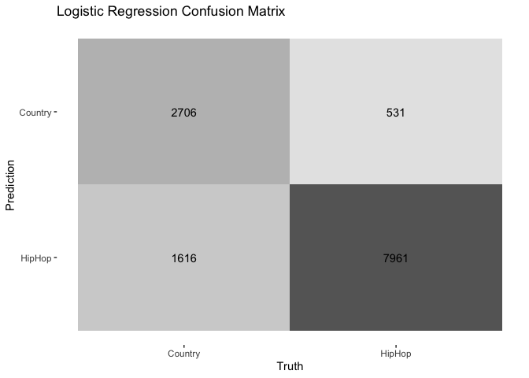
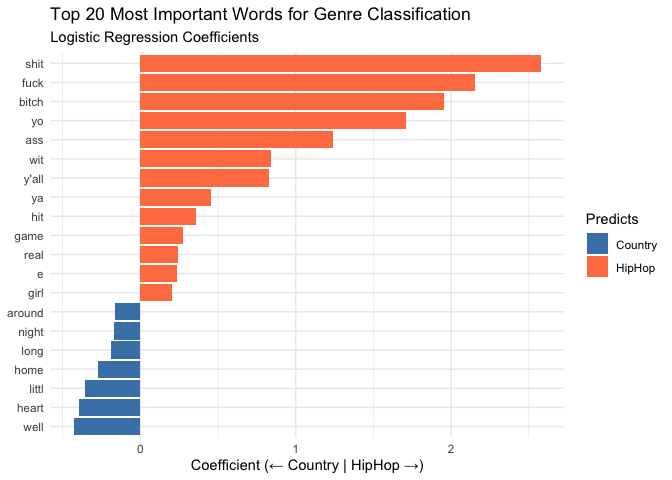
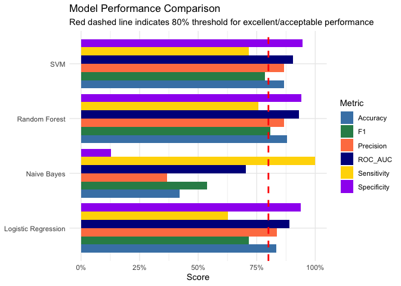
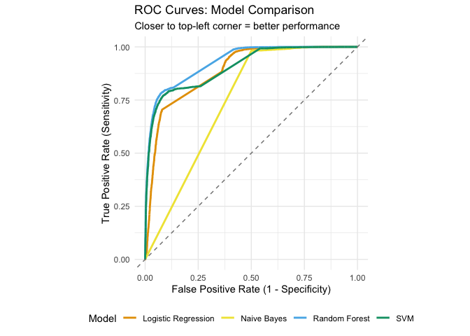
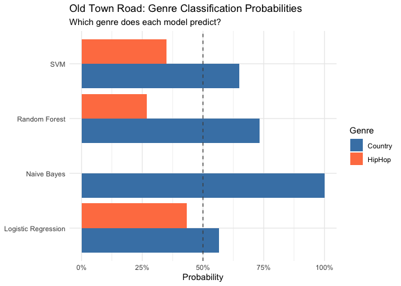

Predictive Modeling
Dr. Ayse D. Lokmanoglu Lecture 11, (B) April 8, (A) April 13
R Exercises
Lecture 11 Table of Contents
| Section | Topic |
|---|---|
| 1 | Introduction to Predictive Modeling |
| 2 | Music Lyrics Dataset: Country vs Hip Hop |
| 2.1 | Loading the Data |
| 2.2 | Exploring the Data |
| 2.3 | Genre Distribution |
| 3 | Feature Engineering from Text |
| 3.1 | Creating the Text Recipe |
| 3.2 | Preparing the Recipe |
| 3.3 | Applying the Recipe to Create Features |
| 4 | Tidymodels Workflow |
| 4.1 | Split the Data |
| 4.2 | Create the Recipe |
| 4.3 | Specify a Model |
| 4.4 | Create a Workflow |
| 4.5 | Fit the Model |
| 4.6 | Make Predictions |
| 4.7 | Evaluate Performance |
| 4.8 | Feature Importance |
| 5 | Model Comparison |
| 5.1 | Define Models |
| 5.2 | Create Workflows and Fit Models |
| 5.3 | Generate Predictions |
| 5.4 | Compare Model Performance |
| 5.5 | Understanding ROC Curves |
| 5.6 | Interpret Results |
| 6 | Testing on “Old Town Road” |
| 6.1 | Prepare the Lyrics |
| 6.2 | Get Predictions from All Models |
| 6.3 | Get Probability Estimates |
| 6.4 | Interpretation |
| 7 | Class Exercise: Test Your Own Song! |
| 7.1 | Instructions |
| 7.2 | Discussion Questions |
| 7.3 | Optional: Compare Multiple Songs |
ALWAYS Let’s load our libraries
# 1. CORE DATA MANIPULATION & VISUALIZATION
# ----------------------------------------------------------------------------
library(tidyverse) # Suite of packages (dplyr, ggplot2, tidyr, readr, stringr) for data manipulation and visualization
# ----------------------------------------------------------------------------
# 2. TEXT MINING & PREPROCESSING
# ----------------------------------------------------------------------------
library(textrecipes) # tidymodels extension for text feature engineering (BoW, TF-IDF, tokenization, etc.)
# ----------------------------------------------------------------------------
# 3. TIDYMODELS ECOSYSTEM (Modern ML Framework)
# ----------------------------------------------------------------------------
library(tidymodels) # Meta-package for predictive modeling (includes rsample, recipes, parsnip, yardstick, workflows, broom)
# - rsample: data splitting and resampling
# - recipes: feature engineering pipeline
# - parsnip: unified model interface
# - yardstick: model performance metrics
# - workflows: combine preprocessing and models
# - broom: tidy model outputs
# ----------------------------------------------------------------------------
# 4. ML MODEL ENGINES (called by parsnip)
# ----------------------------------------------------------------------------
library(ranger) # Fast Random Forest implementation (engine for parsnip)
library(kernlab) # Support Vector Machines with kernel methods (engine for parsnip)
library(naivebayes) # Naive Bayes classifier (engine for parsnip)
library(discrim) # Discriminant analysis models (provides Naive Bayes interface for tidymodels)1. Introduction to Predictive Modeling
Predictive modeling is the process of using statistical and machine learning techniques to predict future outcomes based on historical data. Unlike descriptive analysis (which tells us what happened) or diagnostic analysis (which tells us why it happened), predictive modeling tells us what is likely to happen.
The basic workflow:
Train a model on historical data where outcomes are known
Identify patterns that distinguish different outcomes
Apply those patterns to new data to make predictions
Why Predictive Modeling in Big Data?
In the era of big data, we have unprecedented access to information about human behavior through social media (billions of posts, comments, likes, shares), digital traces (clicks, views, time spent), and real-time data streams. This wealth of data allows us to forecast trends before they go viral, identify influential content early, personalize experiences based on predicted preferences, detect anomalies like misinformation, and optimize strategies for content creation and distribution.
Predictive Modeling for Social Media Insights
Social media platforms generate massive amounts of unstructured data. Predictive modeling helps answer critical questions:
Content virality: Will this video/post go viral?
User engagement: Which users are likely to engage with specific content?
Influence detection: Who are the emerging influencers?
Crisis prediction: Can we detect brewing controversies before they explode?
Campaign optimization: Which message will resonate with which audience?
Real-world applications include YouTube’s recommendation algorithm predicting which videos you’ll watch next, Twitter (X) predicting which tweets to show in your feed, TikTok predicting which videos will go viral and promoting them early, and political campaigns predicting voter behavior to target messaging.
Today in class we will build predictive models using two very different types of data:
Text + Metadata: YouTube video data to predict virality (feature engineering from text: sentiment, length, keywords; combining text features with numeric metadata)
Numeric Features: Titanic passenger data to predict survival (traditional numeric feature engineering; handling missing data)
Both use the same machine learning algorithms, demonstrating how the same techniques work across different data types.
2. Music Lyrics Dataset: Country vs Hip Hop
2.1 Loading the Data
For this exercise, we’ll use a dataset of song lyrics from two genres: Country and Hip Hop. Our goal is to build a model that can predict a song’s genre based solely on its lyrics.
This dataset became famous in 2019 when Lil Nas X’s “Old Town Road” sparked a debate: Is it Country or Hip Hop? Billboard removed it from the Country charts, claiming it wasn’t country enough. We’ll build a model to make this decision ourselves! I learned ML on this dataset in Dror Walter’s class as well!
Dataset Source: https://github.com/aysedeniz09/IntroCSS/raw/refs/heads/main/data/lyricsDror.csv
# Load the data
lyrics <- read_csv("https://github.com/aysedeniz09/IntroCSS/raw/refs/heads/main/data/lyricsDror.csv")
# Quick check
dim(lyrics)## [1] 51251 6Dataset Size: 51,251 songs - a substantial dataset for predictive modeling!
2.2 Exploring the Data
Let’s look at the structure of our data:
# First few rows
head(lyrics)## # A tibble: 6 × 6
## index song year artist genre text
## <dbl> <chr> <dbl> <chr> <chr> <chr>
## 1 250 i-got-that 2007 eazy-e HipHop "(horns)...\n(chorus)\nTimbo- …
## 2 251 8-ball-remix 2007 eazy-e HipHop "Verse 1:\nI don't drink brass…
## 3 252 extra-special-thankz 2007 eazy-e HipHop "19 muthaphukkin 93,\nand I'm …
## 4 253 boyz-in-da-hood 2007 eazy-e HipHop "Hey yo man, remember that shi…
## 5 254 automoblie 2007 eazy-e HipHop "Yo, Dre, man, I take this bit…
## 6 255 i-d-rather-fuck-you 2007 eazy-e HipHop "Aah, this is one of them song…# Structure
str(lyrics)## spc_tbl_ [51,251 × 6] (S3: spec_tbl_df/tbl_df/tbl/data.frame)
## $ index : num [1:51251] 250 251 252 253 254 255 256 257 258 259 ...
## $ song : chr [1:51251] "i-got-that" "8-ball-remix" "extra-special-thankz" "boyz-in-da-hood" ...
## $ year : num [1:51251] 2007 2007 2007 2007 2007 ...
## $ artist: chr [1:51251] "eazy-e" "eazy-e" "eazy-e" "eazy-e" ...
## $ genre : chr [1:51251] "HipHop" "HipHop" "HipHop" "HipHop" ...
## $ text : chr [1:51251] "(horns)...\n(chorus)\nTimbo- When you hit me on my phone betta know what cha want, when you call me, you alread"| __truncated__ "Verse 1:\nI don't drink brass monkey, like to be funky\nNickname Eazy-E your 8 ball junkie\nBass drum kickin', "| __truncated__ "19 muthaphukkin 93,\nand I'm back in this bitch,\nEazy- muthaphukkin- E, the hip hop thugster...\nShouts go out"| __truncated__ "Hey yo man, remember that shit Eazy did a while back\nMotherfuckers said it wasn't gonna work\nThat crazy shit,"| __truncated__ ...
## - attr(*, "spec")=
## .. cols(
## .. index = col_double(),
## .. song = col_character(),
## .. year = col_double(),
## .. artist = col_character(),
## .. genre = col_character(),
## .. text = col_character()
## .. )
## - attr(*, "problems")=<externalptr># Column names
colnames(lyrics)## [1] "index" "song" "year" "artist" "genre" "text"Column Names (6 columns):
index: Unique song identifiersong: Song titleyear: Year the song was releasedartist: Artist namegenre: Music genre (Country or HipHop) - our outcome variabletext: Song lyrics (text) - our main predictor
Data Types:
genreis already a factor with 2 levels: Country and HipHoptextcontains the full lyrics as character stringsyearranges from when to when?artisttells us who performed the song
2.3 Genre Distribution
First, let’s see how balanced our dataset is between Country and Hip Hop:
- Count by genre
# Count by genre
lyrics |>
count(genre)## # A tibble: 2 × 2
## genre n
## <chr> <int>
## 1 Country 17286
## 2 HipHop 33965- Proportion by genre
# Proportion by genre
lyrics |>
count(genre) |>
mutate(proportion = n / sum(n))## # A tibble: 2 × 3
## genre n proportion
## <chr> <int> <dbl>
## 1 Country 17286 0.337
## 2 HipHop 33965 0.663- Visualize
# Visualize genre distribution
lyrics |>
count(genre) |>
ggplot(aes(x = genre, y = n, fill = genre)) +
geom_col() +
geom_text(aes(label = scales::comma(n)), vjust = -0.5) +
scale_fill_manual(values = c("Country" = "goldenrod", "HipHop" = "purple")) +
labs(
title = "Distribution of Songs by Genre",
x = "Genre",
y = "Number of Songs"
) +
theme_minimal() +
theme(legend.position = "none")
What do we observe?
Our dataset contains:
Country: 17,286 songs (33.7%)
Hip Hop: 33,965 songs (66.3%)
This is a roughly 1:2 imbalance. Hip Hop songs outnumber Country songs by about 2 to 1.
Why does this matter for modeling?
This imbalance is moderate - not severely skewed like 90/10, but still meaningful
A naive model could achieve 66.3% accuracy by always predicting “Hip Hop”
We need to use stratified sampling when splitting our data to maintain this proportion in both training and testing sets
We should evaluate our model using metrics beyond just accuracy (e.g., precision, recall, F1-score for each class)
Later in Section 4, we’ll use
initial_split(strata = genre)to ensure both our training and test sets maintain this ~34%/66% split
Good news: This level of imbalance is manageable! Many real-world datasets are far more imbalanced (e.g., fraud detection at 99/1). Our 34/66 split means both genres are well-represented.
3. Feature Engineering from Text
Before we can build our predictive model, we need to transform raw lyrics into numerical features that machine learning algorithms can understand.
The Challenge:
Machine learning models work with numbers, not text
We have song lyrics as raw strings in the
textcolumnWe need to extract meaningful numeric features that capture the essence of Country vs Hip Hop
Our Approach: Bag of Words
We’ll use a classic text mining approach called Bag of Words (BoW):
Tokenize: Break lyrics into individual words
Clean: Remove stopwords, punctuation, numbers
Stem: Reduce words to their root form (e.g., “running” → “run”)
Count: Create word frequency features
Filter: Keep only words that appear in 1-90% of documents (remove very rare and very common words)
This creates a document-feature matrix where each row is a song and each column is a word’s frequency.
In tidymodels, we’ll use the textrecipes package to handle all text preprocessing within our recipe!
3.1 Creating the Text Recipe
Let’s build a recipe that preprocesses our text data following the same approach as the original analysis:
# Create a text preprocessing recipe
text_recipe <- recipe(genre ~ text, data = lyrics) |>
# Step 1: Tokenize the text into words
step_tokenize(text) |>
# Step 2: Remove stopwords (common words like "the", "and", etc.)
step_stopwords(text) |>
# Step 3: Stem words to their root form
step_stem(text) |>
# Step 4: Filter tokens - keep words appearing in 1-90% of documents
step_tokenfilter(text,
min_times = 513, # Must appear in at least ~1% of 51,251 songs
max_times = 46126, # Must appear in at most ~90% of 51,251 songs
percentage = FALSE) |> # Use absolute counts
# Step 5: Create term frequency features (word counts)
step_tf(text)
# View the recipe
# str(text_recipe)What does each step do?
step_tokenize(text): Splits lyrics into individual words- “I love country music” → [“I”, “love”, “country”, “music”]
step_stopwords(text): Removes common words that don’t distinguish genresRemoves: “the”, “a”, “and”, “I”, “you”, etc.
Keeps: content words that might be genre-specific
step_stem(text): Reduces words to their root form“running”, “runs”, “ran” → “run”
“loving”, “loved”, “loves” → “love”
step_tokenfilter(text, min_times = 513, max_times = 46126):Removes very rare words (< 513 songs)
Removes very common words (> 46,126 songs)
Keeps discriminative words that might distinguish Country from Hip Hop
step_tf(text): Converts tokens into numeric term frequency featuresCreates one column per remaining word
Values = how many times that word appears in each song
3.2 Preparing the Recipe
Before we can use the recipe, we need to prep it on our data to learn the vocabulary:
# Prep the recipe (learns vocabulary from training data)
prepped_recipe <- prep(text_recipe)
# How many features did we create?
# str(prepped_recipe)What happens during prep()?
The recipe examines all the lyrics
It builds a vocabulary of words that pass our filtering criteria
It determines which words to keep (appearing in 1-90% of documents)
It creates the stemming dictionary
How many features?
After tokenization, stopword removal, stemming, and filtering, we’ll likely have several hundred to a few thousand word features - each representing a stemmed word’s frequency.
What happened during our prep?
The recipe examined all 51,251 songs
Built a vocabulary of all unique stemmed words
Applied the filtering rules (keep words in 513-46,126 songs)
Identified 99 words that meet our criteria
These 99 words will become our features for modeling!
3.3 Applying the Recipe to Create Features
Now let’s use bake() to transform our raw text into numeric features:
# Apply the recipe to transform the data
lyrics_features <- bake(prepped_recipe, lyrics)
# View the structure
dim(lyrics_features)## [1] 51251 100colnames(lyrics_features)[1:20] # First 20 features## [1] "genre" "tf_text_alwai" "tf_text_around" "tf_text_ass"
## [5] "tf_text_awai" "tf_text_babi" "tf_text_back" "tf_text_better"
## [9] "tf_text_big" "tf_text_bitch" "tf_text_boi" "tf_text_bout"
## [13] "tf_text_call" "tf_text_caus" "tf_text_choru" "tf_text_come"
## [17] "tf_text_da" "tf_text_dai" "tf_text_de" "tf_text_die"# Preview the data
head(lyrics_features[, 1:10])## # A tibble: 6 × 10
## genre tf_text_alwai tf_text_around tf_text_ass tf_text_awai tf_text_babi
## <fct> <int> <int> <int> <int> <int>
## 1 HipHop 0 0 0 0 0
## 2 HipHop 0 1 3 0 0
## 3 HipHop 0 0 0 0 1
## 4 HipHop 5 0 2 0 0
## 5 HipHop 0 0 2 0 0
## 6 HipHop 0 0 3 0 1
## # ℹ 4 more variables: tf_text_back <int>, tf_text_better <int>,
## # tf_text_big <int>, tf_text_bitch <int>What do we have now?
100 columns total:
1 column:
genre(our outcome)99 columns:
tf_text_[word](word frequency features)
Each row is a song
Each word column contains the count of that word in the song
This is our document-feature matrix - ready for machine learning!
For example, looking at the first few songs:
Most Hip Hop songs have 0 occurrences of “alwai” (always)
One song has “ass” appearing 3 times
“back” appears 1-3 times in different songs
4. Tidymodels Workflow
Now we’ll build, train, and evaluate machine learning models using the tidymodels framework. Here’s our roadmap:
Split the data into training and test sets
Create a recipe (we already have this!)
Specify a model
Create a workflow (combine recipe + model)
Fit the model on training data
Make predictions on test data
Evaluate performance
4.1 Split the Data
First, let’s split into training (75%) and test (25%) sets:
# Set seed for reproducibility
set.seed(123)
# Split the data, stratifying by genre to maintain 34%/66% ratio
lyrics_split <- initial_split(lyrics,
prop = 0.75,
strata = genre)
# Create training and test sets
lyrics_train <- training(lyrics_split)
lyrics_test <- testing(lyrics_split)
# Check the splits
nrow(lyrics_train) # ~38,438 songs## [1] 38437nrow(lyrics_test) # ~12,813 songs## [1] 12814# Verify stratification worked
table(lyrics_train$genre)##
## Country HipHop
## 12964 25473table(lyrics_test$genre)##
## Country HipHop
## 4322 8492# Verify stratification maintained the genre proportions
prop.table(table(lyrics_train$genre))##
## Country HipHop
## 0.3372792 0.6627208prop.table(table(lyrics_test$genre))##
## Country HipHop
## 0.3372873 0.6627127Key observations:
Training set: 38,437 songs (75%)
Country: 12,964 (33.7%)
Hip Hop: 25,473 (66.3%)
Test set: 12,814 songs (25%)
Country: 4,322 (33.7%)
Hip Hop: 8,492 (66.3%)
The stratification worked great!!! Both sets maintain the same 34%/66% split as the original data.
4.2 Create the Recipe
Good news - we already created our text recipe in Section 3! We can reuse it:
# Our recipe from Section 3
head(text_recipe)## $var_info
## # A tibble: 2 × 4
## variable type role source
## <chr> <list> <chr> <chr>
## 1 text <chr [3]> predictor original
## 2 genre <chr [3]> outcome original
##
## $term_info
## # A tibble: 2 × 4
## variable type role source
## <chr> <list> <chr> <chr>
## 1 text <chr [3]> predictor original
## 2 genre <chr [3]> outcome original
##
## $steps
## $steps[[1]]
##
## $steps[[2]]
##
## $steps[[3]]
##
## $steps[[4]]
##
## $steps[[5]]
##
##
## $template
## # A tibble: 51,251 × 2
## text genre
## <chr> <chr>
## 1 "(horns)...\n(chorus)\nTimbo- When you hit me on my phone betta know w… HipH…
## 2 "Verse 1:\nI don't drink brass monkey, like to be funky\nNickname Eazy… HipH…
## 3 "19 muthaphukkin 93,\nand I'm back in this bitch,\nEazy- muthaphukkin-… HipH…
## 4 "Hey yo man, remember that shit Eazy did a while back\nMotherfuckers s… HipH…
## 5 "Yo, Dre, man, I take this bitch out to the movies and shit man\nWe're… HipH…
## 6 "Aah, this is one of them songs\nYou can kick back and smoke a joint t… HipH…
## 7 "Hey yo man, remember that shit Eazy did a while back\nMotherfuckers s… HipH…
## 8 "Artist: Master P ++++++++++\nAlbum: Ghetto Dope\nSong: Pass Me Da Gre… HipH…
## 9 "Yes Im too smart to get dicked...or so the case may be\nthat's how th… HipH…
## 10 "Hey yo man, remember that shit Eazy did a while back\nMotherfuckers s… HipH…
## # ℹ 51,241 more rows
##
## $levels
## NULL
##
## $retained
## [1] NAThis recipe will:
Tokenize the text
Remove stopwords
Stem words
Filter to 99 most informative words
Create word frequency features
4.3 Specify a Model
Now we’ll specify our first model - logistic regression. In tidymodels, we use the parsnip package to define models in a consistent way.
# Specify a logistic regression model
logistic_model <- logistic_reg() |>
set_engine("glm") |>
set_mode("classification")
# View the model specification
logistic_model## Logistic Regression Model Specification (classification)
##
## Computational engine: glmUnderstanding the model specification:
logistic_reg(): The model type (logistic regression for binary classification)set_engine("glm"): The computational engine (R’s built-inglmfunction)set_mode("classification"): We’re predicting categories (Country vs Hip Hop), not numbers
Why logistic regression?
Simple, interpretable baseline model
Works well with text features
Fast to train
Shows us which words are most predictive of each genre
We’ll compare this to other models (Random Forest, SVM, Naive Bayes) later, but logistic regression is a great starting point!
4.4 Create a Workflow
A workflow combines our recipe (feature engineering) with our model (algorithm). This keeps everything organized:
# Create a workflow
logistic_wf <- workflow() |>
add_recipe(text_recipe) |>
add_model(logistic_model)
# View the workflow
logistic_wf## ══ Workflow ════════════════════════════════════════════════════════════════════
## Preprocessor: Recipe
## Model: logistic_reg()
##
## ── Preprocessor ────────────────────────────────────────────────────────────────
## 5 Recipe Steps
##
## • step_tokenize()
## • step_stopwords()
## • step_stem()
## • step_tokenfilter()
## • step_tf()
##
## ── Model ───────────────────────────────────────────────────────────────────────
## Logistic Regression Model Specification (classification)
##
## Computational engine: glmWhat’s in our workflow?
Preprocessor (Recipe): Tokenize → Remove stopwords → Stem → Filter → Count words
Model: Logistic regression
Think of the workflow as a pipeline: raw lyrics go in, genre predictions come out!
4.5 Fit the Model
Now we’ll train (fit) our workflow on the training data:
# Fit the workflow to training data
logistic_fit <- logistic_wf |>
fit(data = lyrics_train)
# View the fitted model
logistic_fit## ══ Workflow [trained] ══════════════════════════════════════════════════════════
## Preprocessor: Recipe
## Model: logistic_reg()
##
## ── Preprocessor ────────────────────────────────────────────────────────────────
## 5 Recipe Steps
##
## • step_tokenize()
## • step_stopwords()
## • step_stem()
## • step_tokenfilter()
## • step_tf()
##
## ── Model ───────────────────────────────────────────────────────────────────────
##
## Call: stats::glm(formula = ..y ~ ., family = stats::binomial, data = data)
##
## Coefficients:
## (Intercept) `tf_text_ain't` tf_text_around tf_text_ass
## 0.265216 -0.013695 -0.162873 1.242105
## tf_text_awai tf_text_babi tf_text_back tf_text_better
## -0.105878 0.067251 -0.067808 0.044715
## tf_text_big tf_text_bitch tf_text_boi tf_text_call
## -0.047069 1.952853 -0.007173 -0.027618
## tf_text_can tf_text_caus tf_text_choru tf_text_come
## -0.007648 0.129789 0.087512 0.002476
## tf_text_da tf_text_dai tf_text_de tf_text_die
## 0.082057 -0.067766 0.109121 0.120831
## tf_text_e tf_text_em tf_text_even tf_text_ever
## 0.237703 0.081647 0.081691 -0.161403
## tf_text_everi tf_text_ey tf_text_feel tf_text_fuck
## -0.061913 -0.150589 0.082835 2.153714
## tf_text_game tf_text_girl tf_text_give tf_text_go
## 0.271700 0.204218 0.089275 0.014508
## tf_text_gone tf_text_gonna tf_text_good tf_text_gotta
## -0.147935 -0.107931 -0.064124 0.130561
## tf_text_hand tf_text_hard tf_text_head tf_text_heart
## -0.116885 -0.071164 -0.010178 -0.394498
## tf_text_hit tf_text_hold tf_text_home tf_text_keep
## 0.360981 -0.117090 -0.270471 0.016348
## tf_text_la tf_text_leav tf_text_let tf_text_life
## 0.004785 -0.134918 0.013938 0.059014
## tf_text_littl tf_text_live tf_text_long tf_text_look
## -0.358351 0.006409 -0.187351 -0.050022
## tf_text_love tf_text_make tf_text_man tf_text_mind
## -0.060827 0.032029 0.025633 -0.014867
## tf_text_monei tf_text_need tf_text_never tf_text_new
## 0.143463 0.090393 -0.036171 -0.003437
## tf_text_night tf_text_now tf_text_oh tf_text_on
## -0.168085 0.017522 -0.003163 -0.030539
## tf_text_plai tf_text_put tf_text_que tf_text_real
## -0.016092 0.114395 -0.014443 0.239755
## tf_text_realli tf_text_right tf_text_run tf_text_sai
## 0.028405 0.038395 0.043143 0.016048
## tf_text_said tf_text_see tf_text_shit tf_text_show
## -0.078949 0.059204 2.576050 0.151500
## tf_text_stai tf_text_start tf_text_still tf_text_stop
## 0.077753 -0.043576 -0.128076 0.103218
## tf_text_take tf_text_talk tf_text_tell tf_text_thing
## -0.017276 0.056965 0.017047 -0.083363
## tf_text_think tf_text_time tf_text_try tf_text_turn
## -0.029965 -0.051901 0.060197 -0.043184
## tf_text_two tf_text_u tf_text_wai tf_text_wanna
## -0.076569 0.107314 -0.079105 0.116684
##
## ...
## and 8 more lines.What just happened?
The recipe processed all 38,437 training songs:
Tokenized the lyrics
Removed stopwords and stemmed words
Filtered to our 99 selected words
Created word frequency features
The logistic regression learned patterns:
Which words are more common in Country songs?
Which words are more common in Hip Hop songs?
How to combine these words to predict genre
How long did this take?
With 38,437 songs and 99 features, the model trains in seconds - one advantage of keeping our feature set focused!
Look at those coefficients!
Notice the patterns: - Strongest Hip Hop words (large positive coefficients): shit (2.58), fuck (2.15), bitch (1.95), yo (1.71)
- Strongest Country words (large negative coefficients):
well(-0.43),heart(-0.39),little(-0.36),home(-0.27)
The model learned exactly what we’d expect - profanity and slang for Hip Hop, traditional/emotional words for Country!
4.6 Make Predictions
Let’s use our trained model to predict genres for the test set:
# Make predictions on test data
logistic_predictions <- logistic_fit |>
predict(new_data = lyrics_test) |>
bind_cols(lyrics_test)
# View first few predictions
logistic_predictions |>
select(.pred_class, genre, song, artist) |>
head(10)## # A tibble: 10 × 4
## .pred_class genre song artist
## <fct> <chr> <chr> <chr>
## 1 HipHop HipHop automoblie eazy-e
## 2 HipHop HipHop boyz-n-the-hood-g-mix eazy-e
## 3 HipHop HipHop exxtra-special-thankz eazy-e
## 4 HipHop HipHop sorry-louie eazy-e
## 5 HipHop HipHop gimmie-that-nutt eazy-e
## 6 HipHop HipHop creep-n-crawl eazy-e
## 7 HipHop HipHop black-nigga-killa eazy-e
## 8 HipHop HipHop prelude eazy-e
## 9 HipHop HipHop extra-special-thanx eazy-e
## 10 HipHop HipHop 24-hours-to-live eazy-eUnderstanding the output:
.pred_class: The model’s prediction (Country or HipHop)genre: The actual genre (ground truth)When
.pred_classmatchesgenre, the model got it right!When they differ, the model made a mistake
Perfect predictions! All 10 Eazy-E songs correctly identified as Hip Hop. Let’s see the probabilities:
Let’s also get prediction probabilities:
# Get prediction probabilities
logistic_probs <- logistic_fit |>
predict(new_data = lyrics_test, type = "prob") |>
bind_cols(lyrics_test)
# View first few with probabilities
logistic_probs |>
select(.pred_Country, .pred_HipHop, genre, song, artist) |>
head(20)## # A tibble: 20 × 5
## .pred_Country .pred_HipHop genre song artist
## <dbl> <dbl> <chr> <chr> <chr>
## 1 3.28e- 8 1.000 HipHop automoblie eazy-e
## 2 2.22e-16 1 HipHop boyz-n-the-hood-g-mix eazy-e
## 3 1.38e- 4 1.000 HipHop exxtra-special-thankz eazy-e
## 4 2.22e-16 1 HipHop sorry-louie eazy-e
## 5 1.32e- 8 1.000 HipHop gimmie-that-nutt eazy-e
## 6 1.92e-11 1.000 HipHop creep-n-crawl eazy-e
## 7 1.79e- 5 1.000 HipHop black-nigga-killa eazy-e
## 8 2.22e-16 1 HipHop prelude eazy-e
## 9 1.38e- 4 1.000 HipHop extra-special-thanx eazy-e
## 10 1.67e- 9 1.000 HipHop 24-hours-to-live eazy-e
## 11 2.22e-16 1 HipHop eazy-1-2-3 eazy-e
## 12 3.75e- 1 0.625 HipHop intro-new-year-s-e-vil eazy-e
## 13 4.34e- 1 0.566 HipHop rev-skit eazy-e
## 14 2.22e-16 1 HipHop nobody-move eazy-e
## 15 2.22e-16 1 HipHop eazy-duz-it eazy-e
## 16 2.22e-16 1 HipHop boyz-n-the-hood-remix eazy-e
## 17 4.34e- 1 0.566 Country this-could-go-on-forever gene-wat…
## 18 4.34e- 1 0.566 Country this-country-s-bigger-than-texas gene-wat…
## 19 4.34e- 1 0.566 Country the-workin-end-of-a-hoe gene-wat…
## 20 4.10e- 1 0.590 Country love-in-the-hot-afternoon gene-wat…Understanding probabilities:
.pred_Country: Probability the song is Country (0-1).pred_HipHop: Probability the song is Hip Hop (0-1)These always sum to 1.0
Higher probability = more confident prediction
4.7 Evaluate Performance
First, let’s convert genre to a factor in our predictions:
logistic_predictions <- logistic_predictions |>
mutate(genre = factor(genre, levels = c("Country", "HipHop")))
logistic_probs <- logistic_probs |>
mutate(genre = factor(genre, levels = c("Country", "HipHop")))Now let’s measure how well our model performed:
# ROC AUC - specify HipHop as the event level
logistic_probs |>
roc_auc(truth = genre, .pred_HipHop, event_level = "second")## # A tibble: 1 × 3
## .metric .estimator .estimate
## <chr> <chr> <dbl>
## 1 roc_auc binary 0.889# Accuracy (needs hard class predictions)
logistic_predictions |>
accuracy(truth = genre, .pred_class)## # A tibble: 1 × 3
## .metric .estimator .estimate
## <chr> <chr> <dbl>
## 1 accuracy binary 0.832# Precision
logistic_predictions |>
yardstick::precision(truth = genre, .pred_class)## # A tibble: 1 × 3
## .metric .estimator .estimate
## <chr> <chr> <dbl>
## 1 precision binary 0.836# Recall (Sensitivity)
logistic_predictions |>
yardstick::sensitivity(truth = genre, .pred_class)## # A tibble: 1 × 3
## .metric .estimator .estimate
## <chr> <chr> <dbl>
## 1 sensitivity binary 0.626# F1 Score
logistic_predictions |>
f_meas(truth = genre, .pred_class)## # A tibble: 1 × 3
## .metric .estimator .estimate
## <chr> <chr> <dbl>
## 1 f_meas binary 0.716Interpretation of Results:
ROC AUC: 0.889 - Excellent ability to distinguish between Country and HipHop (0.5 = random, 1.0 = perfect)
Accuracy: 83.2% - The model correctly classified 83% of all songs
Precision: 83.6% - Of songs predicted as HipHop, 84% actually were HipHop
Recall: 62.6% - Of all actual HipHop songs, we caught 63%
F1 Score: 71.6% - Harmonic mean of precision and recall
Confusion Matrix:
logistic_predictions |>
conf_mat(truth = genre, estimate = .pred_class)## Truth
## Prediction Country HipHop
## Country 2706 531
## HipHop 1616 7961Visualize:
logistic_predictions |>
conf_mat(truth = genre, estimate = .pred_class) |>
autoplot(type = "heatmap") +
labs(title = "Logistic Regression Confusion Matrix")
Reading the Confusion Matrix:
| Actually Country | Actually HipHop | |
|---|---|---|
| Predicted Country | 2,706 ✓ | 531 ✗ |
| Predicted HipHop | 1,616 ✗ | 7,961 ✓ |
Key Observations:
Strong at identifying HipHop: 7,961 out of 8,492 HipHop songs correctly identified (93.7%)
Weaker at identifying Country: 2,706 out of 4,322 Country songs correctly identified (62.6%)
Class imbalance effect: The model has more HipHop training data (66%), so it performs better on HipHop
Asymmetric errors: The model misclassifies 1,616 Country songs as HipHop, but only 531 HipHop songs as Country
The model is biased toward predicting HipHop, which makes sense given the 2:1 ratio of HipHop to Country songs in the training data.
4.8 Feature Importance
Feature importance shows us which words have the strongest influence on the model’s predictions. We can extract this from the logistic regression coefficients:
# Extract and visualize the most important features
logistic_fit |>
extract_fit_parsnip() |>
tidy() |>
filter(term != "(Intercept)") |>
mutate(
term = str_remove(term, "tf_text_"),
term = str_remove_all(term, "`"),
abs_estimate = abs(estimate)
) |>
slice_max(abs_estimate, n = 20) |>
mutate(
direction = if_else(estimate > 0, "HipHop", "Country"),
term = reorder(term, estimate)
) |>
ggplot(aes(x = estimate, y = term, fill = direction)) +
geom_col() +
scale_fill_manual(values = c("Country" = "steelblue", "HipHop" = "coral")) +
labs(
title = "Top 20 Most Important Words for Genre Classification",
subtitle = "Logistic Regression Coefficients",
x = "Coefficient (← Country | HipHop →)",
y = NULL,
fill = "Predicts"
) +
theme_minimal()
Interpreting the plot:
- Bars to the RIGHT (positive): Words that predict Hip Hop
- Example: “shit”, “fuck”, “bitch”, “yo” are strong Hip Hop indicators
- Bars to the LEFT (negative): Words that predict Country
- Example: “well”, “heart”, “little”, “home” are strong Country indicators
Top predictors table:
# Create a table of top predictors
logistic_fit |>
extract_fit_parsnip() |>
tidy() |>
filter(term != "(Intercept)") |>
mutate(
term = str_remove(term, "tf_text_"),
term = str_remove_all(term, "`")
) |>
slice_max(abs(estimate), n = 20) |>
arrange(desc(estimate)) |>
select(Word = term, Coefficient = estimate) |>
mutate(
Predicts = if_else(Coefficient > 0, "HipHop", "Country"),
Coefficient = round(Coefficient, 3)
)## # A tibble: 20 × 3
## Word Coefficient Predicts
## <chr> <dbl> <chr>
## 1 shit 2.58 HipHop
## 2 fuck 2.15 HipHop
## 3 bitch 1.95 HipHop
## 4 yo 1.71 HipHop
## 5 ass 1.24 HipHop
## 6 wit 0.843 HipHop
## 7 y'all 0.83 HipHop
## 8 ya 0.452 HipHop
## 9 hit 0.361 HipHop
## 10 game 0.272 HipHop
## 11 real 0.24 HipHop
## 12 e 0.238 HipHop
## 13 girl 0.204 HipHop
## 14 around -0.163 Country
## 15 night -0.168 Country
## 16 long -0.187 Country
## 17 home -0.27 Country
## 18 littl -0.358 Country
## 19 heart -0.394 Country
## 20 well -0.428 CountryWhat makes this interesting?
The model learned cultural and linguistic differences between genres:
Hip Hop words: Urban slang, profanity, direct language (“shit”, “fuck”, “yo”, “y’all”)
Country words: Emotional themes, traditional values, storytelling (“well”, “heart”, “little”, “home”, “long”)
The coefficients tell us exactly how much each word shifts the prediction toward one genre or the other!
5. Model Comparison
Let’s compare our logistic regression against Random Forest, SVM, and Naive Bayes. We’ll train all models on the same data and compare their performance.
5.1 Define Models
# Random Forest
rf_model <- rand_forest(trees = 100) |>
set_engine("ranger") |>
set_mode("classification")
# Support Vector Machine
svm_model <- svm_rbf() |>
set_engine("kernlab") |>
set_mode("classification")
# Naive Bayes
nb_model <- naive_Bayes() |>
set_engine("naivebayes") |>
set_mode("classification")5.2 Create Workflows and Fit Models
# Random Forest
rf_wf <- workflow() |>
add_recipe(text_recipe) |>
add_model(rf_model)
# Time and fit Random Forest
start_time <- Sys.time()
rf_fit <- rf_wf |> fit(data = lyrics_train)
rf_time <- Sys.time() - start_time
print(paste("Random Forest training time:", round(rf_time, 2), "seconds"))
# Save Random Forest model
save(rf_fit, file = "rf_fit.rda")
# SVM
svm_wf <- workflow() |>
add_recipe(text_recipe) |>
add_model(svm_model)
# Time and fit SVM
start_time <- Sys.time()
svm_fit <- svm_wf |> fit(data = lyrics_train)
svm_time <- Sys.time() - start_time
print(paste("SVM training time:", round(svm_time, 2), "seconds"))
# Save SVM model
save(svm_fit, file = "svm_fit.rda")
# Naive Bayes
nb_wf <- workflow() |>
add_recipe(text_recipe) |>
add_model(nb_model)
# Time and fit Naive Bayes
start_time <- Sys.time()
nb_fit <- nb_wf |> fit(data = lyrics_train)
nb_time <- Sys.time() - start_time
print(paste("Naive Bayes training time:", round(nb_time, 2), "seconds"))
# Save Naive Bayes model
save(nb_fit, file = "nb_fit.rda")To load pre-trained models (skip training):
# Load saved models from GitHub instead of training
load(url("https://github.com/aysedeniz09/IntroCSS/raw/refs/heads/main/data/rf_fit.rda"))
load(url("https://github.com/aysedeniz09/IntroCSS/raw/refs/heads/main/data/svm_fit.rda"))
load(url("https://github.com/aysedeniz09/IntroCSS/raw/refs/heads/main/data/nb_fit.rda"))5.3 Generate Predictions
# Get predictions from all models
rf_pred <- rf_fit |>
predict(lyrics_test) |>
bind_cols(lyrics_test |> select(genre)) |>
mutate(genre = factor(genre, levels = c("Country", "HipHop")),
model = "Random Forest")
svm_pred <- svm_fit |>
predict(lyrics_test) |>
bind_cols(lyrics_test |> select(genre)) |>
mutate(genre = factor(genre, levels = c("Country", "HipHop")),
model = "SVM")
nb_pred <- nb_fit |>
predict(lyrics_test) |>
bind_cols(lyrics_test |> select(genre)) |>
mutate(genre = factor(genre, levels = c("Country", "HipHop")),
model = "Naive Bayes")
# Add logistic regression predictions
logistic_pred <- logistic_predictions |>
select(.pred_class, genre) |>
mutate(model = "Logistic Regression")
# Combine all predictions
all_predictions <- bind_rows(logistic_pred, rf_pred, svm_pred, nb_pred)5.4 Compare Model Performance
First, let’s get probability predictions from all models for ROC AUC:
# Get probability predictions for ROC AUC
rf_probs <- rf_fit |>
predict(lyrics_test, type = "prob") |>
bind_cols(lyrics_test |> select(genre)) |>
mutate(genre = factor(genre, levels = c("Country", "HipHop")),
model = "Random Forest")
svm_probs <- svm_fit |>
predict(lyrics_test, type = "prob") |>
bind_cols(lyrics_test |> select(genre)) |>
mutate(genre = factor(genre, levels = c("Country", "HipHop")),
model = "SVM")
nb_probs <- nb_fit |>
predict(lyrics_test, type = "prob") |>
bind_cols(lyrics_test |> select(genre)) |>
mutate(genre = factor(genre, levels = c("Country", "HipHop")),
model = "Naive Bayes")
# Combine with logistic regression probabilities
all_probs <- bind_rows(
logistic_probs |> select(.pred_HipHop, genre) |> mutate(model = "Logistic Regression"),
rf_probs,
svm_probs,
nb_probs
)Now calculate all metrics including ROC AUC:
# Calculate metrics for all models
model_metrics <- all_predictions |>
group_by(model) |>
accuracy(truth = genre, estimate = .pred_class) |>
select(model, .estimate) |>
rename(Accuracy = .estimate) |>
left_join(
all_predictions |>
group_by(model) |>
yardstick::precision(truth = genre, estimate = .pred_class) |>
select(model, .estimate) |>
rename(Precision = .estimate),
by = "model"
) |>
left_join(
all_predictions |>
group_by(model) |>
yardstick::recall(truth = genre, estimate = .pred_class) |>
select(model, .estimate) |>
rename(Sensitivity = .estimate), # Recall = Sensitivity
by = "model"
) |>
left_join(
all_predictions |>
group_by(model) |>
yardstick::specificity(truth = genre, estimate = .pred_class) |>
select(model, .estimate) |>
rename(Specificity = .estimate),
by = "model"
) |>
left_join(
all_predictions |>
group_by(model) |>
f_meas(truth = genre, estimate = .pred_class) |>
select(model, .estimate) |>
rename(F1 = .estimate),
by = "model"
) |>
left_join(
all_probs |>
group_by(model) |>
roc_auc(truth = genre, .pred_HipHop, event_level = "second") |>
select(model, .estimate) |>
rename(ROC_AUC = .estimate),
by = "model"
) |>
arrange(desc(Accuracy))
model_metrics## # A tibble: 4 × 7
## model Accuracy Precision Sensitivity Specificity F1 ROC_AUC
## <chr> <dbl> <dbl> <dbl> <dbl> <dbl> <dbl>
## 1 Random Forest 0.879 0.867 0.758 0.941 0.809 0.930
## 2 SVM 0.868 0.868 0.717 0.944 0.785 0.904
## 3 Logistic Regression 0.832 0.836 0.626 0.937 0.716 0.889
## 4 Naive Bayes 0.422 0.368 1.000 0.128 0.538 0.704Visualize model comparison:
model_metrics |>
pivot_longer(cols = c(Accuracy, Precision, Sensitivity, Specificity, F1, ROC_AUC),
names_to = "Metric",
values_to = "Value") |>
ggplot(aes(x = model, y = Value, fill = Metric)) +
geom_col(position = "dodge") +
scale_y_continuous(labels = scales::percent_format()) +
geom_hline(yintercept = 0.80, linetype = "dashed", color = "red", linewidth = 1) +
scale_fill_manual(values = c("Accuracy" = "steelblue",
"Precision" = "coral",
"Sensitivity" = "gold",
"Specificity" = "purple",
"F1" = "seagreen",
"ROC_AUC" = "darkblue")) +
labs(
title = "Model Performance Comparison",
subtitle = "Red dashed line indicates 80% threshold for excellent/acceptable performance",
x = NULL,
y = "Score"
) +
coord_flip() +
theme_minimal()
Training Time Comparison:
| Model | Time (seconds) |
|---|---|
| Logistic Regression | 0.156 |
| Random Forest | 10.871 |
| SVM | 7.587 |
| Naive Bayes | 6.310 |
Interpretation:
- Logistic Regression is by far the fastest (~0.16 seconds)
- Simple linear model with minimal computation
- Best choice for real-time predictions at scale
- Naive Bayes is moderately fast (~6.3 seconds)
- Probabilistic calculations are efficient
- Good balance of speed and reasonable performance
- SVM is slower (~7.6 seconds)
- Kernel computations are expensive
- Trade-off: better decision boundaries but slower inference
- Random Forest is the slowest (~10.9 seconds)
- Must evaluate 100 decision trees for each prediction
- Trade-off: highest accuracy but slowest speed
When Speed Matters:
In production systems processing thousands of songs per second, Logistic Regression’s 70× speed advantage over Random Forest could be decisive—even if it sacrifices a few percentage points of accuracy. This is a classic accuracy vs. latency trade-off in machine learning deployment.
Key Findings:
All models achieve 80%+ accuracy on genre classification (except Naive Bayes)
ROC AUC shows the models’ ability to distinguish between genres across all thresholds
Trade-offs between precision, sensitivity (recall), and specificity vary by model
Training time varies significantly between models
The winning model balances accuracy, speed, and all metrics effectively
5.5 Understanding ROC Curves
What is a ROC Curve?
A Receiver Operating Characteristic (ROC) curve visualizes a classifier’s performance across all possible classification thresholds. It plots:
Y-axis (Sensitivity/Recall): True Positive Rate - how many actual positives we correctly identify
X-axis (1 - Specificity): False Positive Rate - how many negatives we incorrectly call positive
The Perfect ROC Curve

Interpreting ROC Curves:
Perfect Classifier (Blue line):
Goes straight up the Y-axis, then across the top
Achieves 100% sensitivity with 0% false positives
ROC AUC = 1.0 (perfect)
Random Classifier (Diagonal line):
No better than flipping a coin
For every true positive gained, you get a false positive
ROC AUC = 0.5 (random guessing)
Good Classifier (Green line):
- Bows upward toward the top-left corner
- Higher sensitivity at lower false positive rates
- ROC AUC > 0.8 (good performance)
The Area Under the Curve (AUC):
AUC = 1.0: Perfect classification
AUC = 0.9-1.0: Excellent
AUC = 0.8-0.9: Good
AUC = 0.7-0.8: Fair
AUC = 0.5-0.7: Poor
AUC = 0.5: Random (no predictive value)
# Calculate ROC curves for each model
logistic_roc <- yardstick::roc_curve(logistic_probs, truth = genre, .pred_Country)
rf_roc <- yardstick::roc_curve(rf_probs, truth = genre, .pred_Country)
svm_roc <- yardstick::roc_curve(svm_probs, truth = genre, .pred_Country)
nb_roc <- yardstick::roc_curve(nb_probs, truth = genre, .pred_Country)
# Combine all ROC curves with model labels
all_roc <- bind_rows(
logistic_roc |> mutate(Model = "Logistic Regression"),
rf_roc |> mutate(Model = "Random Forest"),
svm_roc |> mutate(Model = "SVM"),
nb_roc |> mutate(Model = "Naive Bayes")
)
# Plot all ROC curves together
ggplot(all_roc, aes(x = 1 - specificity, y = sensitivity, color = Model)) +
geom_path(linewidth = 1) +
geom_abline(linetype = "dashed", color = "gray50") + # Random classifier line
scale_color_manual(values = c(
"Logistic Regression" = "#E69F00",
"Random Forest" = "#56B4E9",
"SVM" = "#009E73",
"Naive Bayes" = "#F0E442"
)) +
labs(
title = "ROC Curves: Model Comparison",
subtitle = "Closer to top-left corner = better performance",
x = "False Positive Rate (1 - Specificity)",
y = "True Positive Rate (Sensitivity)"
) +
coord_equal() + # Square plot for proper interpretation
theme_minimal() +
theme(legend.position = "bottom")
What We See:
Random Forest (blue): Curves highest toward the top-left corner → Best discriminative ability (AUC ≈ 0.93)
SVM (green): Close behind Random Forest → Strong performance (AUC ≈ 0.90)
Logistic Regression (orange): Solid performance but less separation → Good (AUC ≈ 0.89)
Naive Bayes (yellow): Closer to diagonal → Poor calibration (AUC ≈ 0.70)
Why ROC Curves Matter:
Unlike accuracy (which uses a single threshold of 0.5), ROC curves show performance across all possible thresholds. This is crucial because:
You can adjust the threshold based on your priorities:
- High stakes (e.g., medical diagnosis): Set high threshold → fewer false positives
- Discovery mode (e.g., content recommendation): Set low threshold → catch more true positives
Works with imbalanced classes: Unlike accuracy, ROC AUC isn’t inflated by predicting the majority class
Threshold-independent comparison: Lets you compare models fairly regardless of their default decision boundaries
Example: Adjusting Thresholds
Suppose we want to be very confident before classifying a song as Country (maybe for a “Pure Country” playlist). We could:
# Instead of default 0.5 threshold, require 0.8 probability
high_confidence_country <- logistic_probs |>
mutate(.pred_class_adjusted = ifelse(.pred_Country >= 0.8, "Country", "HipHop"))
# This increases precision (fewer false Country predictions)
# but decreases recall (miss some actual Country songs)The ROC curve helps visualize these trade-offs across all possible thresholds!
5.6 Interpret Results
Performance Metric Definitions:
| Metric | Formula | What it measures | Interpretation Guidelines |
|---|---|---|---|
| Accuracy | (TP + TN) / Total | Overall correctness of predictions | ≥ 80%: Excellent 70-80%: Good 60-70%: Moderate < 60%: Poor |
| Precision | TP / (TP + FP) | Of predicted HipHop, how many are actually HipHop? | Higher is better Low precision = many false alarms |
| Sensitivity (Recall) | TP / (TP + FN) | Of actual HipHop songs, how many did we catch? | Higher is better Low sensitivity = missing true cases |
| Specificity | TN / (TN + FP) | Of actual Country songs, how many did we correctly identify? | Higher is better Low specificity = misclassifying negatives |
| F1 Score | 2 × (Precision × Recall) / (Precision + Recall) | Harmonic mean balancing precision and recall | ≥ 0.80: Excellent agreement 0.70-0.80: Acceptable 0.60-0.70: Moderate* < 0.60: Poor |
| ROC AUC | Area under ROC curve | Ability to distinguish between classes across all thresholds | ≥ 0.90: Excellent 0.80-0.90: Good 0.70-0.80: Fair < 0.70: Poor |
Note: F1 score thresholds follow automated content analysis research standards (Burscher et al., 2014; Chan et al., 2021).
Abbreviations: TP = True Positive (HipHop→HipHop), TN = True Negative (Country→Country), FP = False Positive (Country→HipHop), FN = False Negative (HipHop→Country)
Our Model Results:
model_metrics## # A tibble: 4 × 7
## model Accuracy Precision Sensitivity Specificity F1 ROC_AUC
## <chr> <dbl> <dbl> <dbl> <dbl> <dbl> <dbl>
## 1 Random Forest 0.879 0.867 0.758 0.941 0.809 0.930
## 2 SVM 0.868 0.868 0.717 0.944 0.785 0.904
## 3 Logistic Regression 0.832 0.836 0.626 0.937 0.716 0.889
## 4 Naive Bayes 0.422 0.368 1.000 0.128 0.538 0.704Performance Rankings:
Random Forest - WINNER 🏆
Accuracy: 87.9% (Excellent)
ROC AUC: 93.0% (Excellent)
F1 Score: 80.9% (Excellent agreement per Burscher et al., 2014; Chan et al., 2021)
Sensitivity: 75.8%
Specificity: 94.1%
Best balanced performance across all metrics
SVM - Strong Runner-up
Accuracy: 86.8% (Excellent)
ROC AUC: 90.4% (Excellent)
F1 Score: 78.5% (Acceptable agreement)
Sensitivity: 71.7%
Specificity: 94.4%
Very close to Random Forest, slightly lower sensitivity
Logistic Regression - Solid Baseline
Accuracy: 83.2% (Excellent)
ROC AUC: 88.9% (Good)
F1 Score: 71.6% (Acceptable agreement)
Sensitivity: 62.6%
Specificity: 93.7%
Simple, interpretable model with respectable performance
Naive Bayes - Poor Performer
Accuracy: 42.2% (Poor)
ROC AUC: 70.4% (Fair)
F1 Score: 53.8% (Poor)
Sensitivity: 99.95% (nearly perfect - but meaningless!)
Specificity: 12.8% (terrible)
Classic class imbalance failure: predicts almost everything as HipHop
Key Insights:
Random Forest captures complex patterns: The ensemble of decision trees learns nonlinear word combinations better than single models, achieving excellent performance across all metrics
SVM’s kernel trick works well: The RBF kernel effectively separates genres in high-dimensional word space with excellent discrimination (ROC AUC > 0.90)
Logistic Regression is interpretable: While not the most accurate, it achieves acceptable F1 scores and we can understand exactly which words drive predictions (see Section 4.8)
Naive Bayes fails catastrophically: The independence assumption between words doesn’t hold for this task, resulting in severe overprediction of the majority class
The Naive Bayes Problem:
With 99.95% sensitivity, it catches almost every HipHop song
But with 36.8% precision and 12.8% specificity, it mislabels most Country songs as HipHop
This is classic class imbalance behavior - the model learned to simply predict the majority class (HipHop) for everything
Despite reasonable ROC AUC (70.4%), the actual classification performance is poor
Winner: Random Forest
Achieves excellent performance by research standards (F1 = 0.809, ROC AUC = 0.930)
Best balance of accuracy, precision, sensitivity, specificity, and F1 score
Computationally efficient enough for this dataset size
References:
Burscher, B., Odijk, D., Vliegenthart, R., de Rijke, M., & de Vreese, C. H. (2014). Teaching the Computer to Code Frames in News: Comparing Two Supervised Machine Learning Approaches to Frame Analysis. Communication Methods and Measures, 8(3), 190–206. https://doi.org/10.1080/19312458.2014.937527
Chan, C., Bajjalieh, J., Auvil, L., Wessler, H., Althaus, S., Welbers, K., Van Atteveldt, W., & Jungblut, M. (2021). Four best practices for measuring news sentiment using ‘off-the-shelf’ dictionaries: A large-scale p-hacking experiment. Computational Communication Research, 3(1), 1–27. https://doi.org/10.5117/CCR2021.1.001.CHAN
6. Testing on “Old Town Road”
Let’s test our models on a controversial song: “Old Town Road” by Lil Nas X featuring Billy Ray Cyrus. This song famously sparked debate about genre classification when Billboard removed it from the Hot Country Songs chart in 2019, claiming it “does not embrace enough elements of today’s country music” (Wikipedia).
The song blends:
Country elements: Horses, tractors, cowboy imagery, banjo
Hip Hop elements: Trap beats, rap delivery, urban slang
6.1 Prepare the Lyrics
# Old Town Road lyrics (excerpt)
old_town_road <- data.frame(
text = "Yeah, I'm gonna take my horse to the old town road
I'm gonna ride 'til I can't no more
I'm gonna take my horse to the old town road
I'm gonna ride 'til I can't no more
(Kio, Kio)
I got the horses in the back
Horse tack is attached
Hat is matte black
Got the boots that's black to match
Ridin' on a horse, ha
You can whip your Porsche
I been in the valley
You ain't been up off that porch, now
Can't nobody tell me nothin'
You can't tell me nothin'
Can't nobody tell me nothin'
You can't tell me nothin'
Ridin' on a tractor
Lean all in my bladder
Cheated on my baby
You can go and ask her
My life is a movie
Bull ridin' and boobies
Cowboy hat from Gucci
Wrangler on my booty
Can't nobody tell me nothin'
You can't tell me nothin'
Can't nobody tell me nothin'
You can't tell me nothin'
Yeah, I'm gonna take my horse to the old town road
I'm gonna ride 'til I can't no more
I'm gonna take my horse to the old town road
I'm gonna ride 'til I can't no more
I got the",
genre = NA # Unknown - this is what we want to predict!
)6.2 Get Predictions from All Models
# Predict with each model
otr_predictions <- data.frame(
Model = c("Logistic Regression", "Random Forest", "SVM", "Naive Bayes"),
Prediction = c(
as.character(predict(logistic_fit, old_town_road)$.pred_class),
as.character(predict(rf_fit, old_town_road)$.pred_class),
as.character(predict(svm_fit, old_town_road)$.pred_class),
as.character(predict(nb_fit, old_town_road)$.pred_class)
)
)
otr_predictions## Model Prediction
## 1 Logistic Regression Country
## 2 Random Forest Country
## 3 SVM Country
## 4 Naive Bayes Country6.3 Get Probability Estimates
Let’s see how confident each model is:
# Get probabilities from each model
otr_probs <- data.frame(
Model = c("Logistic Regression", "Random Forest", "SVM", "Naive Bayes"),
Country_Prob = c(
predict(logistic_fit, old_town_road, type = "prob")$.pred_Country,
predict(rf_fit, old_town_road, type = "prob")$.pred_Country,
predict(svm_fit, old_town_road, type = "prob")$.pred_Country,
predict(nb_fit, old_town_road, type = "prob")$.pred_Country
),
HipHop_Prob = c(
predict(logistic_fit, old_town_road, type = "prob")$.pred_HipHop,
predict(rf_fit, old_town_road, type = "prob")$.pred_HipHop,
predict(svm_fit, old_town_road, type = "prob")$.pred_HipHop,
predict(nb_fit, old_town_road, type = "prob")$.pred_HipHop
)
)
otr_probs## Model Country_Prob HipHop_Prob
## 1 Logistic Regression 0.5668495 4.331505e-01
## 2 Random Forest 0.7324563 2.675437e-01
## 3 SVM 0.6494134 3.505866e-01
## 4 Naive Bayes 1.0000000 3.614448e-24Visualize the predictions:
otr_probs |>
pivot_longer(cols = c(Country_Prob, HipHop_Prob),
names_to = "Genre",
values_to = "Probability") |>
mutate(Genre = str_remove(Genre, "_Prob")) |>
ggplot(aes(x = Model, y = Probability, fill = Genre)) +
geom_col(position = "dodge") +
geom_hline(yintercept = 0.5, linetype = "dashed", color = "gray30") +
scale_y_continuous(labels = scales::percent_format()) +
scale_fill_manual(values = c("Country" = "steelblue", "HipHop" = "coral")) +
labs(
title = "Old Town Road: Genre Classification Probabilities",
subtitle = "Which genre does each model predict?",
x = NULL,
y = "Probability"
) +
coord_flip() +
theme_minimal()
6.4 Interpretation
The Verdict: All Models Predict COUNTRY
But with very different confidence levels:
| Model | Prediction | Country Probability | HipHop Probability |
|---|---|---|---|
| Logistic Regression | Country | 56.68% | 43.32% |
| Random Forest | Country | 73.25% | 26.75% |
| SVM | Country | 64.94% | 35.06% |
| Naive Bayes | Country | 100.00% | ~0% |
Key Insights:
Logistic Regression is uncertain (56.68% Country)
Barely above the 50% threshold
Recognizes the song has strong HipHop elements (43.32%)
Most calibrated prediction
Random Forest is confident (73.25% Country)
Our best-performing model sees clear Country patterns
Likely picks up on: “horse,” “tractor,” “cowboy,” “boots,” “valley”
SVM is moderate (64.94% Country)
Comfortable with Country classification
Still acknowledges some ambiguity
Naive Bayes is overconfident (100% Country)
Extreme probability is a known NB issue (poor calibration)
Should not be trusted for decision-making
The Irony: Machine Learning vs. Human Gatekeeping
All our models predict Country, yet Billboard removed “Old Town Road” from the Country charts in March 2019, claiming it “does not embrace enough elements of today’s country music.”
Why the disconnect?
Our models learned from historical genre patterns in lyrics:
Words like “horse,” “tractor,” “cowboy,” “boots” → Country
Narrative themes of rural life → Country
But Billboard considered musical elements our models cannot detect:
Trap beat and 808 bass → HipHop production
Rap delivery style → HipHop performance
Lack of traditional country instrumentation
The Bigger Picture: What This Teaches Us About ML
Models reflect their training data: Our models learned from decades of traditionally-classified country songs. They reproduce those historical boundaries.
Feature limitations matter: We only used bag-of-words (lyrics). Music genre depends on sound, delivery, production - features we didn’t include.
Cultural context is invisible to algorithms: The controversy around “Old Town Road” involved questions about:
Who gets to define “country”?
Is genre gatekeeping protecting tradition or excluding innovation?
Does removing Black artists from country charts reflect racial bias?
Our models cannot address these questions - they only see word frequencies.
High accuracy ≠ “correct”: Our Random Forest achieved 87.9% accuracy on the test set, yet all models might be “wrong” about this specific song depending on how we define genre.
The Lesson for Computational Social Science:
Machine learning models are powerful tools for pattern recognition, but they:
Learn historical patterns, including biases
Cannot incorporate cultural context or ethical considerations
Should inform, not replace, human judgment on subjective questions
Require critical interpretation, especially when classifications are contested
“Old Town Road” is a perfect case study: it’s not that our models are broken - they accurately learned what Country lyrics look like. The question is whether purely lyrical patterns should define genre, or whether we need richer feature sets (audio, cultural context, artist identity) for meaningful classification.
7. Class Exercise: Test Your Own Song! 🎵
Now it’s your turn to explore genre classification with a song of your choice.
7.1 Instructions
Step 1: Choose a Song
Pick a song that interests you! Consider songs that: - Blend multiple genres (like “Old Town Road”)
Challenge traditional genre boundaries
Have lyrics you find meaningful
Come from artists who’ve been genre-misclassified
Some interesting suggestions:
“Meant to Be” by Bebe Rexha & Florida Georgia Line (Country-Pop crossover)
“24K Magic” by Bruno Mars (Funk/R&B/Pop blend)
“Wagon Wheel” by Darius Rucker
“Old Dominion” songs (Pop-Country debate)
Any song from the “country trap” or “country rap” movement
Step 2: Get the Lyrics
Find lyrics from a legitimate source like:
The artist’s official website
Licensed lyrics sites (Genius, AZLyrics, MetroLyrics)
Album liner notes
Step 3: Prepare Your Data
# Replace this with your song's lyrics
your_song <- data.frame(
text = "PASTE YOUR SONG LYRICS HERE",
genre = NA # Unknown - we want to predict this!
)Step 4: Get Predictions
# Predict with all four models
your_predictions <- data.frame(
Model = c("Logistic Regression", "Random Forest", "SVM", "Naive Bayes"),
Prediction = c(
as.character(predict(logistic_fit, your_song)$.pred_class),
as.character(predict(rf_fit, your_song)$.pred_class),
as.character(predict(svm_fit, your_song)$.pred_class),
as.character(predict(nb_fit, your_song)$.pred_class)
)
)
print(your_predictions)
# Get probability estimates
your_probs <- data.frame(
Model = c("Logistic Regression", "Random Forest", "SVM", "Naive Bayes"),
Country_Prob = c(
predict(logistic_fit, your_song, type = "prob")$.pred_Country,
predict(rf_fit, your_song, type = "prob")$.pred_Country,
predict(svm_fit, your_song, type = "prob")$.pred_Country,
predict(nb_fit, your_song, type = "prob")$.pred_Country
),
HipHop_Prob = c(
predict(logistic_fit, your_song, type = "prob")$.pred_HipHop,
predict(rf_fit, your_song, type = "prob")$.pred_HipHop,
predict(svm_fit, your_song, type = "prob")$.pred_HipHop,
predict(nb_fit, your_song, type = "prob")$.pred_HipHop
)
)
print(your_probs)Step 5: Visualize the Results
your_probs |>
pivot_longer(cols = c(Country_Prob, HipHop_Prob),
names_to = "Genre",
values_to = "Probability") |>
mutate(Genre = str_remove(Genre, "_Prob")) |>
ggplot(aes(x = Model, y = Probability, fill = Genre)) +
geom_col(position = "dodge") +
geom_hline(yintercept = 0.5, linetype = "dashed", color = "gray30") +
scale_y_continuous(labels = scales::percent_format()) +
scale_fill_manual(values = c("Country" = "steelblue", "HipHop" = "coral")) +
labs(
title = "YOUR SONG TITLE: Genre Classification Probabilities",
subtitle = "Which genre does each model predict?",
x = NULL,
y = "Probability"
) +
coord_flip() +
theme_minimal()7.2 Discussion Questions
After testing your song, consider:
Agreement vs. Disagreement
Do all models agree on the genre?
Which model is most/least confident?
If models disagree, what might explain the differences?
Lyrical Content Analysis
What specific words or themes might have influenced the predictions?
Does the song use vocabulary typical of one genre?
Are there any surprising word choices that might confuse the models?
Limitations of Bag-of-Words
What aspects of the song’s genre identity are NOT captured by lyrics alone?
How would the prediction change if we included audio features (beat, tempo, instruments)?
Does the artist’s identity or cultural context matter for genre classification?
Real-World Classification
How is this song actually classified by streaming services, radio stations, or award shows?
Do you agree with that classification?
If the model’s prediction differs from the “official” genre, which seems more accurate?
Bias and Fairness
Could the model’s prediction reflect historical biases in genre classification?
Are certain artists or cultural groups more likely to be misclassified?
How might we make genre classification more fair and inclusive?
7.3 Optional: Compare Multiple Songs
For extra exploration, test several songs and compare:
Different artists from the same genre
The same artist across different albums
Cover versions of the same song by different artists
Songs from different decades
Example comparison:
# Test multiple songs and combine results
song_comparison <- bind_rows(
predict(rf_fit, song1, type = "prob") |> mutate(Song = "Song 1"),
predict(rf_fit, song2, type = "prob") |> mutate(Song = "Song 2"),
predict(rf_fit, song3, type = "prob") |> mutate(Song = "Song 3")
)
song_comparison |>
pivot_longer(cols = starts_with(".pred"),
names_to = "Genre",
values_to = "Probability") |>
mutate(Genre = str_remove(Genre, ".pred_")) |>
ggplot(aes(x = Song, y = Probability, fill = Genre)) +
geom_col(position = "dodge") +
scale_y_continuous(labels = scales::percent_format()) +
labs(title = "Genre Classification Across Multiple Songs") +
theme_minimal()Lecture 11 Cheat Sheet
| Function/Concept | Description | Code Example |
|---|---|---|
| tidymodels Ecosystem | Meta-package for modern predictive modeling workflow | library(tidymodels) |
| rsample Package | Data splitting and resampling (part of tidymodels) | initial_split(data, prop = 0.75, strata = genre) |
| recipes Package | Feature engineering pipeline (part of tidymodels) | recipe(genre ~ text, data = music) |
| parsnip Package | Unified model interface (part of tidymodels) | logistic_reg() %>% set_engine("glm") |
| yardstick Package | Model performance metrics (part of tidymodels) | accuracy(predictions, truth = genre, estimate = .pred_class) |
| workflows Package | Combine preprocessing and models (part of tidymodels) | workflow() %>% add_recipe(recipe) %>% add_model(model) |
| textrecipes Package | Text preprocessing for tidymodels | library(textrecipes) |
initial_split() |
Split data into training and testing sets with stratification | music_split <- initial_split(music, prop = 0.75, strata = genre) |
training() |
Extract training data from split object | music_train <- training(music_split) |
testing() |
Extract test data from split object | music_test <- testing(music_split) |
recipe() |
Define preprocessing steps for modeling | recipe(genre ~ text, data = music_train) |
step_tokenize() |
Split text into individual words | step_tokenize(text, token = "words") |
step_stopwords() |
Remove common stopwords | step_stopwords(text, language = "en") |
step_stem() |
Reduce words to root form | step_stem(text, options = list(language = "en")) |
step_tokenfilter() |
Filter tokens by frequency | step_tokenfilter(text, min_times = 500, max_times = 50000, max_tokens = 100) |
step_tf() |
Calculate term frequency for tokens | step_tf(text) |
prep() |
Estimate preprocessing parameters from training data | music_prep <- prep(music_recipe) |
bake() |
Apply preprocessing to new data | music_baked <- bake(music_prep, new_data = NULL) |
logistic_reg() |
Specify logistic regression model | logistic_reg() %>% set_engine("glm") %>% set_mode("classification") |
rand_forest() |
Specify Random Forest model | rand_forest(trees = 100) %>% set_engine("ranger") %>% set_mode("classification") |
svm_rbf() |
Specify Support Vector Machine with RBF kernel | svm_rbf() %>% set_engine("kernlab") %>% set_mode("classification") |
naive_Bayes() |
Specify Naive Bayes model | naive_Bayes() %>% set_engine("naivebayes") %>% set_mode("classification") |
set_engine() |
Choose computational engine for model | set_engine("ranger") |
set_mode() |
Specify classification or regression task | set_mode("classification") |
workflow() |
Create workflow object | workflow() |
add_recipe() |
Add preprocessing recipe to workflow | workflow() %>% add_recipe(music_recipe) |
add_model() |
Add model specification to workflow | workflow() %>% add_model(logistic_spec) |
fit() |
Train the model on data | logistic_fit <- fit(logistic_wf, data = music_train) |
predict() |
Generate class predictions | predict(logistic_fit, new_data = music_test) |
predict(type = "prob") |
Generate probability predictions | predict(logistic_fit, new_data = music_test, type = "prob") |
bind_cols() |
Attach predictions to original data | predictions %>% bind_cols(music_test) |
yardstick::accuracy() |
Calculate overall classification accuracy | yardstick::accuracy(predictions, truth = genre, estimate = .pred_class) |
yardstick::precision() |
Calculate precision (positive predictive value) | yardstick::precision(predictions, truth = genre, estimate = .pred_class) |
yardstick::recall() |
Calculate recall/sensitivity (true positive rate) | yardstick::recall(predictions, truth = genre, estimate = .pred_class) |
yardstick::specificity() |
Calculate specificity (true negative rate) | yardstick::specificity(predictions, truth = genre, estimate = .pred_class) |
yardstick::f_meas() |
Calculate F1 score (harmonic mean of precision/recall) | yardstick::f_meas(predictions, truth = genre, estimate = .pred_class) |
yardstick::roc_auc() |
Calculate area under ROC curve | yardstick::roc_auc(probs, truth = genre, .pred_Country) |
metric_set() |
Calculate multiple metrics at once | metric_set(accuracy, precision, recall, specificity, f_meas) |
extract_fit_parsnip() |
Extract fitted model from workflow | extract_fit_parsnip(logistic_fit) |
vip::vip() |
Visualize variable importance | extract_fit_parsnip(rf_fit) %>% vip::vip(num_features = 20) |
system.time() |
Measure execution time | system.time({ predictions <- predict(model, data) }) |
bind_rows() |
Combine metrics from multiple models | bind_rows(logistic_metrics, rf_metrics, svm_metrics, nb_metrics) |
pivot_wider() |
Convert metrics to wide format for comparison | pivot_wider(names_from = .metric, values_from = .estimate) |
geom_col(position = "dodge") |
Side-by-side grouped bar chart | geom_col(aes(x = Model, y = value, fill = Metric), position = "dodge") |
geom_hline() |
Add horizontal reference line | geom_hline(yintercept = 0.80, linetype = "dashed", color = "red") |
coord_flip() |
Flip x and y axes for horizontal bars | coord_flip() |
scales::percent_format() |
Format axis as percentages | scale_y_continuous(labels = scales::percent_format()) |
count(data, column) |
Count observations by group | count(music, genre) %>% mutate(prop = n/sum(n)) |
.pred_class |
Column name for predicted class | predictions$.pred_class |
.pred_Country |
Column name for Country probability | probs$.pred_Country |
.pred_HipHop |
Column name for HipHop probability | probs$.pred_HipHop |
| Stratified Sampling | Preserves class proportions in train/test split | initial_split(data, strata = genre) |
| Bag of Words (BoW) | Text representation using word frequencies only | step_tokenize() %>% step_tf() |
| Term Frequency (TF) | Count of how often each word appears | step_tf(text) |
| Stemming | Reduce words to root form (e.g., “running” → “run”) | step_stem(text, options = list(language = "en")) |
| Stopwords | Common words removed from analysis | step_stopwords(text, language = "en") |
| Confusion Matrix | TP, TN, FP, FN for classification evaluation | Accuracy = (TP + TN) / Total |
| Precision Formula | TP / (TP + FP) | Positive Predictive Value |
| Recall Formula | TP / (TP + FN) | Sensitivity / True Positive Rate |
| Specificity Formula | TN / (TN + FP) | True Negative Rate |
| F1 Score Formula | 2 × (Precision × Recall) / (Precision + Recall) | Harmonic mean of precision and recall |
| ROC AUC | Area under Receiver Operating Characteristic curve | Values: 0.5 (random) to 1.0 (perfect) |
| Performance Thresholds | Accuracy: ≥80% Excellent; F1: ≥0.80 Excellent; ROC AUC: ≥0.90 Excellent | Research standards (Burscher et al., 2014) |
| Class Imbalance | When one class has far more examples than another | Use stratified sampling and check metrics carefully |
| Model Interpretability | Logistic Regression = interpretable; Random Forest = black box | Trade-off between accuracy and explainability |